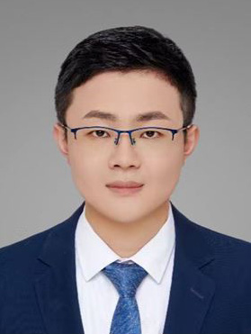

CMMCAWorkshop 
Oct 4th, 2026
Computational Mathematics Modeling in Cancer Analysis
Computational Mathematics Modeling in Cancer Analysis
| Home | Keynotes | Submission | Agenda |
[15/03/2026] We are happy to announce our workshop will be held at MICCAI2026! See you in Abu Dhabi!
The primary academic goal of the CMMCA workshop is to convene mathematicians, biomedical engineers, computer scientists, and physicians in order to deliberate on innovative mathematical approaches for analyzing multimodal cancer data. These approaches are intended for practical application in clinical settings, addressing crucial tasks such as cancer subtype classification and prognostic prediction. The workshop's secondary objective is to encourage researchers to put forth novel methods for cancer data analysis that prioritize interpretability. This involves integrating clinical data with algorithms grounded in robust mathematical theories, facilitating a more profound exploration of cancer through the lens of computational science. Such exploration includes mapping biological and computational correlations across multiple omics data at various scales. The scope of multimodal cancer data encompasses, but is not limited to, radiographic, pathology, genomics, and proteomics data.
Cancer, a multifaceted and heterogeneous ailment, frequently results in misdiagnosis and ineffective treatment strategies. Over the past few decades, numerous mathematical and computational approaches have been employed in foundational cancer research. These approaches have significantly contributed to our comprehension of this intricate spectrum of diseases, fostering the generation of novel hypotheses and predictions. They have also steered scientists towards a new phase of more enlightening and successful experimental endeavors. In the realm of clinical applications, a plethora of mathematical methods dedicated to the analysis of multimodal cancer data has been extensively utilized. These methods play a pivotal role in tasks such as cancer subtype identification, stage classification, prognostic prediction, and various other applications. Rooted in sound mathematical theory and biological mechanisms, advanced computational methods for cancer data analysis prove to be robust and clinically applicable. They offer strong interpretability by seamlessly combining clinical data and algorithms, especially in this era of artificial intelligence. Furthermore, these methods facilitate a profound exploration of cancer from the vantage point of computational science. They enable the mapping of intricate biological and computational correlations across diverse omics data, unveiling insights at various scales and perspectives.
The primary objective of the Computational Mathematics Modeling in Cancer Analysis (CMMCA) workshop is to advance scientific researchers within the expansive realm of computational mathematics in cancer analysis. The workshop will specifically address key trends and challenges in the theoretical, computational, and applied aspects of mathematics in cancer data analysis. It aims to showcase works focused on identifying cutting-edge techniques and their applications in cancer data analysis. We anticipate that the workshop will offer a distinctive platform for in-depth technical discussions and the exchange of ideas across various areas involving mathematical and computational sciences, modeling, and simulations, ultimately contributing novel insights to cancer research and clinical applications.
The workshop's thematic areas encompass, but are not limited to, computational mathematics modeling, including Deep Learning, Differential Equations, Multi-scale Modeling, Cellular Automaton, Spatial Graph Network, Nonlinear Dynamical Systems, and Probability Methods. These modeling techniques find applications in diverse areas, such as but are not limited to:
• Interpretability-based learning mathematics theory for cancer imaging analysis
• Medical image analysis of anatomical structures/functions and tumors
• Computer-aided tumor detection/diagnosis
• Multi-modality fusion for cancer analysis, diagnosis, and surgery/treatment plans
• Molecular/pathologic/cellular image analysis in the microenvironment, immunity, invasion, treatment, and resistance
• Computational modeling characterizing tumor growth, metabolism, and evolution
• Topological tumor graphs for prognosis analysis
• Biologically-based mathematical modeling in tumor vasculature and angiogenesis
• Spatiotemporal modeling for heterogeneity and evolution of the tumor microenvironment
• Digital twin for clinical trial design, precision medicine, and drug discovery

Dr. Wenjian Qin Shenzhen Institutes of Advanced Technology, Chinese Academy of Sciences |

Dr. Nazar Zaki United Arab Emirate University |

Dr. Jia Gu City University of Macau |

Dr. Chao Li University of Cambridge |

Dr. Jia Wu University of Texas MD Anderson Cancer Center |

Dr. Lequan Yu The University of Hong Kong |
|
 Dr. Ge Ren The Hong Kong Polytechnic University |

Dr. Rafat Damseh United Arab Emirate University |

Jiahui He (PhD student) Shenzhen Institutes of Advanced Technology, Chinese Academy of Sciences |

Dr. Lei Xing Stanford University |

Dr. Daniel Racoceanu Sorbonne University |

Dr. Carola Bibiane Schönlieb University of Cambridge |

Dr. Jing Cai The Hong Kong Polytechnic University |

Dr. Shuo Li Case Western Reserve University |

Dr. Caroline Chung University of Texas MD Anderson Cancer Center |

Dr. Hairong Zheng Shenzhen Institute of Advanced Technology, Chinese Academy of Sciences |
LNCS CMMCA Series
4th Workshop, 2025, Republic of Korea
3rd Workshop, 2024, Morocco
2nd Workshop, 2023, Canada
1st Workshop, 2022, Singapore